Abstracts are quoted verbatim from the papers. Authors, venues, page numbers and DOIs were verified against dblp and the publishers. Every number on this page was checked against the table it comes from in the paper itself, not against the paper’s prose. Figures are the papers’ own, with the papers’ own captions, except the one diagram labelled as drawn for this page.
The five papers
| # | Paper | Year | Venue | Method | Role |
|---|---|---|---|---|---|
| 1 | Effect of different sensor croppings | 2019 | IEEE ICB | PRNU | Joint first |
| 2 | Sensor ID with presentation attack data | 2019 | ARW/OAGM | PRNU | Joint first |
| 3 | Detection of presentation attacks | 2019 | IEEE IWBF | PRNU | Joint first |
| 4 | Origin from texture descriptors | 2021 | ICCSA | Texture + SVM | Sole first |
| 5 | Origin with CNNs | 2021 | IEEE IWBF | CNN | Sole first |
They are listed below in that order, which is also the order in which each one leads to the next. Eight public finger-vein datasets run through all five.
PRNU-based finger vein sensor identification: On the effect of different sensor croppings
IEEE ICB 2019 · Greece · pp. 1-8 · Joint first author · WaveLab, University of Salzburg
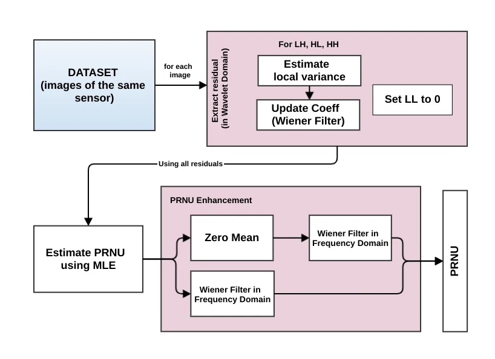
Figure from the paper: “PRNU Estimation Workflow”
In this work, we study the applicability of PRNU-based sensor identification methods for finger vein imagery. We also investigate the effect of different image regions on the identification performance by looking at five different croppings with different sizes. The proposed method is tested on eight publicly available finger vein datasets. For each finger vein sensor a noise reference pattern is generated and subsequently matched with noise residuals extracted from previously unseen finger vein images. Although the final result strongly encourages the use of PRNU-based approaches for sensor identification, it can also be observed that the choice of image region for PRNU extraction is crucial. The result clearly shows that regions containing biometric trait (varying content) should be preferred over background regions containing non-biometric trait (identical content).
What it does. Nobody had shown that PRNU sensor identification works on finger-vein images at all. This paper tests it, and then asks a second question the first one hides: which part of the image should the fingerprint come from? Five crop regions are tried, matched by Normalized Cross Correlation and Peak-to-Correlation-Energy, scored subject-wise over four folds.
Where the crop is taken from
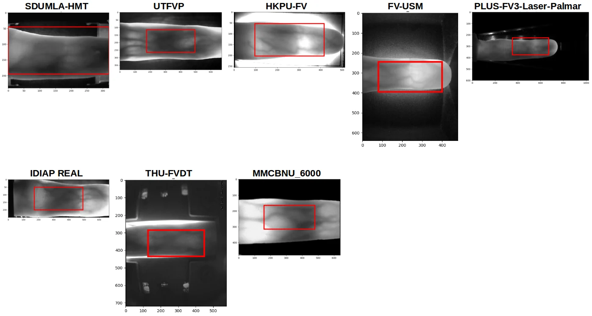
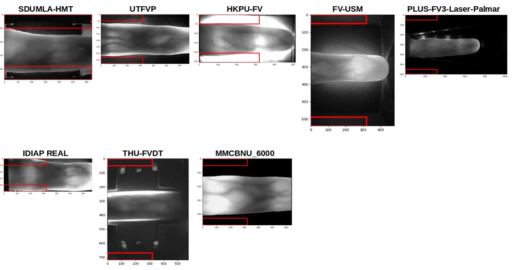
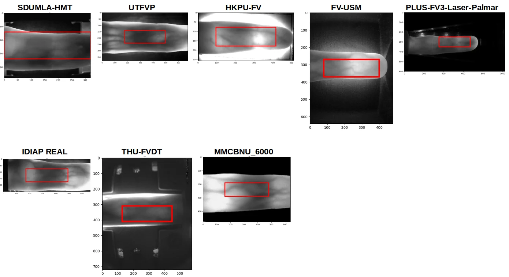
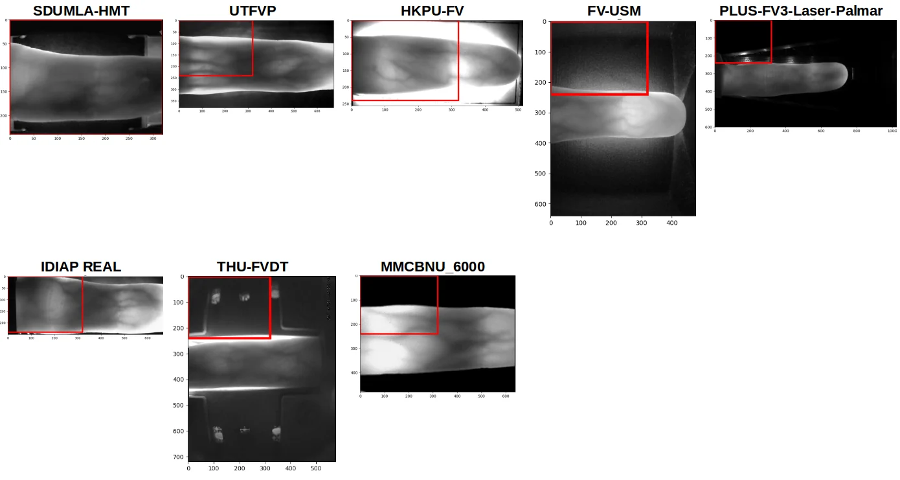
Average AUC-ROC across the five croppings, Wiener filter, NCC and PCE:
| Cropping | NCC AUC-ROC | NCC AUC-PR | PCE AUC-ROC | PCE AUC-PR |
|---|---|---|---|---|
| Center 320×240 | 0.992 | 0.978 | 0.991 | 0.973 |
| Center 320×150 | 0.998 | 0.979 | 0.997 | 0.978 |
| Center 320×100 | 0.996 | 0.953 | 0.994 | 0.956 |
| Background 320×100 | 0.886 | 0.627 | 0.859 | 0.547 |
| Top-left 320×240 | 0.978 | 0.968 | 0.993 | 0.960 |
The background crop and the smallest centre crop are the same size, so they carry the same amount of information. The centre crop still scores 0.996 against the background’s 0.886. Size is not what matters; content is. And bigger is not better: the largest centre crop drops back to 0.992, because growing the window pulls background back in.
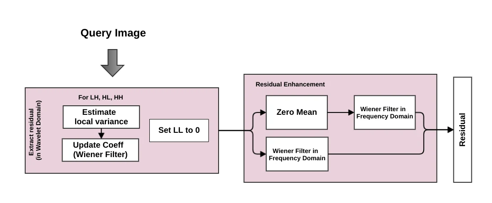
Figure from the paper: “Residual Workflow”
BibTeX
@inproceedings{soellinger2019icb,
author = {S{\"o}llinger, Dominik and Maser, B. and Uhl, Andreas},
title = {PRNU-based finger vein sensor identification: On the effect of
different sensor croppings},
booktitle = {Proc. Int. Conf. on Biometrics (ICB)},
pages = {1--8},
year = {2019},
doi = {10.1109/ICB45273.2019.8987237}
}
Both first authors contributed equally, stated in the paper’s own author footnote.
PRNU-based Finger Vein Sensor Identification in the Presence of Presentation Attack Data
ARW/OAGM 2019 · Steyr, Austria · 5 pp. · Joint first author · WaveLab, University of Salzburg
We examine the effectiveness of the Photo Response Non-Uniformity (PRNU) in the context of sensor identification for finger vein imagery. Experiments are conducted on eight publicly-available finger vein datasets. We apply a Wiener Filter (WF) in the frequency domain to enhance the quality of PRNU estimation and noise residual, respectively, and we use two metrics to rank PRNU similarity, i.e. Peak-to-Energy (PCE) and Normalized Cross Correlation (NCC). In the experiments, we include a dataset consisting of both real finger vein data and captured artifacts produced to assess presentation attacks. We investigate the impact of this situation on sensor identification accuracy and also try to discriminate spoofed images from non-spoof images varying decision thresholds. Results of sensor identification for finger vein imagery is encouraging, the obtained scores for classification accuracies are between 97% to 98% for different settings. Interestingly, selecting particular decision thresholds, it is also possible to discriminate real data from artificial data as used in presentation attacks.
What it does. A deployed system does not hold a clean gallery. It holds real captures and, if someone has attacked it, artifacts made to imitate a finger. This paper puts both in the same pool and asks whether sensor identification survives. It does. Then it turns the threshold into a second instrument and asks whether the same score can also tell the two kinds of image apart.
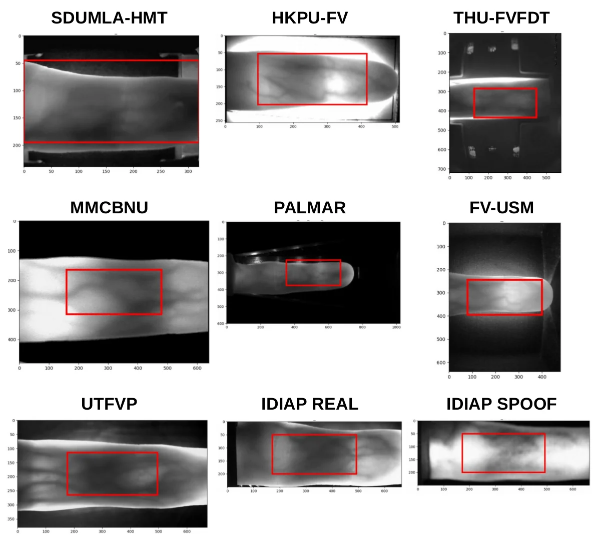
The conclusion proposes the next step in plain words: the PRNU approach “might be also suited for presentation attack, aka sensor spoofing, detection.” The IWBF paper below does exactly that.
BibTeX
@inproceedings{maser2019oagm,
author = {Maser, B. and S{\"o}llinger, Dominik and Uhl, Andreas},
title = {PRNU-based Finger Vein Sensor Identification in the Presence of
Presentation Attack Data},
booktitle = {Proc. Joint Austrian Robotics Workshop and OAGM Workshop (ARW/OAGM)},
year = {2019},
doi = {10.3217/978-3-85125-663-5-38}
}
Both first authors contributed equally, stated in the paper’s own author footnote.
PRNU-based Detection of Finger Vein Presentation Attacks
IEEE IWBF 2019 · Mexico · pp. 1-6 · Joint first author · WaveLab, University of Salzburg
In this work, we evaluated the effectiveness of the Photo Response Non-Uniformity (PRNU) to detect presentation/spoofing attacks for finger vein imagery. The performance is evaluated on two publicly-available finger vein presentation/spoofing attack datasets (IDIAP and SCUT-FVD). Maximum likelihood estimation (MLE) is used to estimate the sensor’s PRNU. To decide whether a query image is real or spoofed, we compare its residual to the estimated sensor PRNU using PCE and NCC as similarity measures. We observe that the classification performance is heavily dependent on the set of images used for PRNU estimation. We assume different degrees of variability in image content caused by distinct light scattering properties in real tissue and artifacts to be one of the main reasons for the differences in classification performance.
What it does. Same signal, different question. Instead of asking which sensor, it asks real finger or artifact. The reasoning is physical: real tissue and a fake finger do not scatter near-infrared light the same way, so the residual left in the image differs.
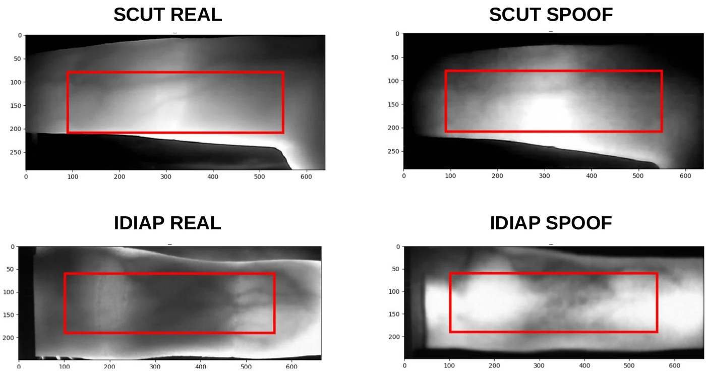
That ACER comes from one configuration only: the PRNU fingerprint built from the spoof images, with the Wiener filter. The paper flags this itself as a surprise: fingerprints built from real images do not always classify better.
In the configuration a deployed system would actually have, a fingerprint estimated from real captures, the numbers are AUC-ROC 0.792 on SCUT-FVD and 0.903 on IDIAP. Quote those two if the question is whether this would work in the field.
BibTeX
@inproceedings{maser2019iwbf,
author = {Maser, B. and S{\"o}llinger, Dominik and Uhl, Andreas},
title = {PRNU-based Detection of Finger Vein Presentation Attacks},
booktitle = {Proc. 7th Int. Workshop on Biometrics and Forensics (IWBF)},
pages = {1--6},
year = {2019},
doi = {10.1109/IWBF.2019.8739203}
}
Identifying the Origin of Finger Vein Samples Using Texture Descriptors
ICCSA 2021 · Cagliari, Italy · pp. 237-250 · Sole first author · WaveLab, University of Salzburg
Workflow drawn from the method described in the paper. Not a figure from the paper.
Identifying the origin of a sample image in biometric systems can be beneficial for data authentication in case of attacks against the system and initiating sensor-specific processing pipelines in sensor-heterogeneous environments. Motivated by shortcomings of the photo response non-uniformity (PRNU) based method in the biometric context, we employ eight texture classification approaches, including frequency-, spatial-, and wavelet-based methods to detect finger vein samples images’ origin. Besides, We use eight publicly available finger vein datasets and applying all eight novel classical texture descriptors and SVM classification in the suggested pipeline. A novel wavelet-based approach termed WMV demonstrated an excellent result for raw finger vein samples and the more challenging region of interest data among mentioned employed methods to identify sensor model. The observed results establish texture descriptors as effective competitors to PRNU in finger vein sensor model identification.
What it does. It names the weakness in the PRNU method and then routes around it. PRNU must be estimated from uncorrelated data, “which is, of course, hard to satisfy given the high similarities among sample images present in biometric datasets,” as the paper puts it, citing the ICB work above. Texture descriptors carry no such requirement. Eight of them are run, one is new, and an SVM decides which sensor produced the image.
The eight descriptors, average AUC-ROC
| Descriptor | Original, no enh. | Original, enh. | ROI, no enh. | ROI, enh. |
|---|---|---|---|---|
| FRF | 0.997 | 0.999 | 0.989 | 0.986 |
| HLBP | 0.992 | 0.994 | 0.941 | 0.955 |
| ULBP | 0.995 | 0.999 | 0.931 | 0.932 |
| LE | 0.919 | 0.952 | 0.834 | 0.858 |
| ImHist | 0.989 | 0.961 | 0.906 | 0.966 |
| WV | 0.998 | 0.998 | 0.984 | 0.983 |
| WE | 0.993 | 0.985 | 0.977 | 0.959 |
| WMV | 0.999 | 0.999 | 0.982 | 0.994 |
WMV takes a 2-D wavelet decomposition with Daubechies 8-tap filters and computes the mean and variance per subband. It is the only descriptor that stays above 0.99 in all four columns.
One region of interest from each dataset
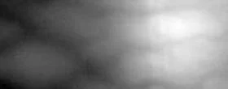
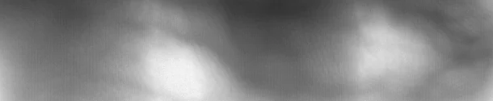
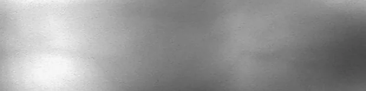
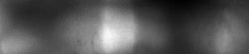
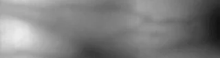
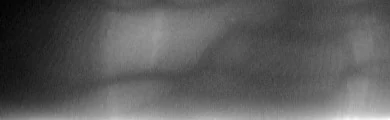
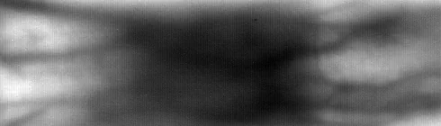
These eight are the same eight datasets used by every paper on this page.
BibTeX
@inproceedings{maser2021iccsa,
author = {Maser, B. and Uhl, Andreas},
title = {Identifying the Origin of Finger Vein Samples Using Texture Descriptors},
booktitle = {Computational Science and Its Applications (ICCSA 2021)},
series = {Lecture Notes in Computer Science},
pages = {237--250},
year = {2021},
doi = {10.1007/978-3-030-86960-1_17}
}
Using CNNs to Identify the Origin of Finger Vein Sample Images
IEEE IWBF 2021 · Rome, Italy · pp. 1-6 · Sole first author · WaveLab, University of Salzburg
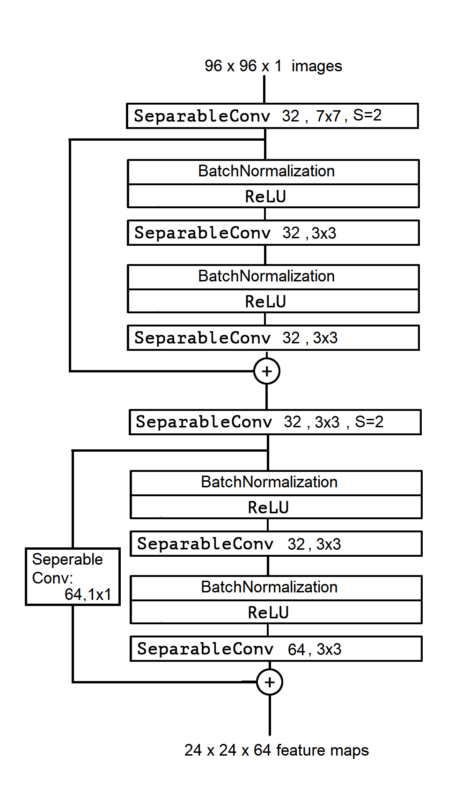
Figure from the paper: “Proposed model: FV2021 CNN Architecture”
We study the finger vein (FV) sensor model identification task using a deep learning approach. So far, for this biometric modality, only correlation-based PRNU and texture descriptor-based methods have been applied. We employ five prominent CNN architectures covering a wide range of CNN family models, including VGG16, ResNet, and the Xception model. In addition, a novel architecture termed FV2021 is proposed in this work, which excels by its compactness and a low number of parameters to be trained. Original samples, as well as the region of interest data from eight publicly accessible FV datasets, are used in experimentation. An excellent sensor identification AUC-ROC score of 1.0 for patches of uncropped samples and 0.9997 for ROI samples have been achieved. The comparison with former methods shows that the CNN-based approach is superior and improved the results.
What it does. Six CNNs are trained on 96×96 patches with CLAHE contrast enhancement and a softmax over the eight sensors: two forensics models from the literature (Bondi, Marra), three general architectures (VGG16, ResNet50, Xception), and FV2021, designed here. The point of FV2021 is not a higher score, several models reach the ceiling. It is that it reaches the ceiling while being small enough to be cheap.
Model size
| Model | Total params | Layers |
|---|---|---|
| Bondi | 2,681,368 | 4 conv + 2 FC |
| Marra | 65,563,720 | 3 conv + 2 FC |
| VGG16 | 55,097,288 | 8 conv + 3 FC |
| ResNet50 | 23,597,832 | 50 conv + 1 FC |
| Xception | 20,877,296 | 36 conv + 1 FC |
| FV2021 | 314,632 | 6 conv + 1 FC |
Sensor identification, AUC-ROC
| Model | Uncropped | ROI |
|---|---|---|
| Bondi | 0.99997 | 0.99773 |
| Marra | 1.00000 | 0.99856 |
| VGG16 | 1.00000 | 0.99945 |
| ResNet50 | 0.99996 | 0.99949 |
| Xception | 1.00000 | 0.99972 |
| FV2021 | 1.00000 | 0.99970 |
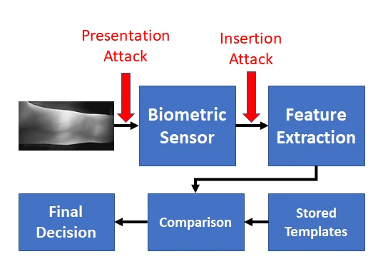
The paper states its own protocol: 120 images per dataset, 960 images in total. A score of 1.00000 on 960 images is a benchmark ceiling on a clean, balanced, eight-way problem. It is not a claim about field deployment, and the paper does not make one.
Funded by the Austrian Science Fund (FWF), project P32201.
BibTeX
@inproceedings{maser2021iwbf,
author = {Maser, B. and Uhl, Andreas},
title = {Using CNNs to Identify the Origin of Finger Vein Sample Images},
booktitle = {Proc. 9th Int. Workshop on Biometrics and Forensics (IWBF)},
pages = {1--6},
year = {2021},
doi = {10.1109/IWBF50991.2021.9465077}
}